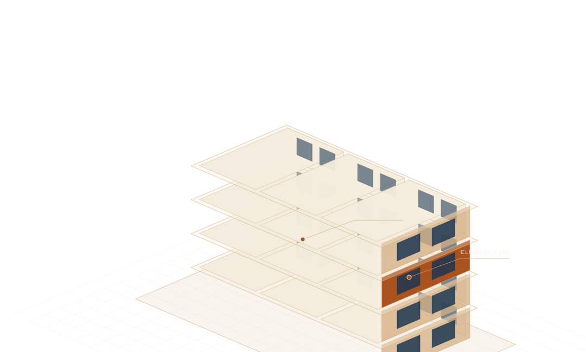

SPATIAL + INTELLIGENCE
공간을 읽고,
건물의 내일을 잇다.
지도 위의 위치부터 건물 안의 기록까지.
연결된 공간에서 더 나은 관리의 근거를 발견하세요.

BUILT ON CONNECTIONSGIS · BIM · BUILDING OPERATIONS
SCROLL TO EXPLORE 가상 건축물 콘셉트 일러스트공간의 관계를 읽다.
구조물·자재·연결 관계에서
점검의 우선순위를 살펴보세요.
안과 밖을 연결하다.
건물의 로컬 좌표를 지도와 연결하고
주변 공간정보를 함께 확인하세요.
기록으로 함께 관리하다.
입주자·관리자·전문가가
하나의 공간을 기준으로 협업합니다.
EXPLORE YOUR SPACE
하나의 건물, 연결되는 인사이트.
공간을 선택하는 순간, 흩어져 있던 정보가 하나로 이어집니다.
YOUR BUILDING, CONNECTED
공간 분석 워크스페이스
구조물을 선택하고 자재·연결 관계·점검 우선도를 확인하세요.
◈
가상 건물 · 공간 관계 기반 분석 데모점검 우선도는 가정한 지표의 가중 합이며, 붕괴 확률·법적 안전 등급·원인 확정 결과가 아닙니다.
A BETTER WAY TO CARE모든 기록이,
모든 기록이,
하나의 공간으로.
도면 속 구조물과 지도 위의 위치,
그리고 현장에서 쌓이는 점검 기록.
SPATIA는 같은 공간의 식별자로 정보를 연결합니다.